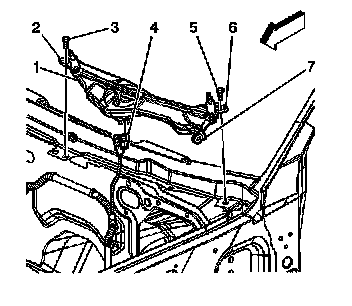

Windshield Wiper System Module Replacement
Windshield Wiper System Module Replacement
Removal Procedure
1. Remove the wiper motor mini 10 A and 30 A fuses. The wiper motor fuses are located in the underhood fuse block.
2. Remove the wiper arm assemblies. Refer to Windshield Wiper Arm Replacement (Windshield Wiper Arm Replacement) .
3. Remove the air inlet grille. Refer to Air Inlet Grille Panel Replacement (Service and Repair) .

4. Remove the wiper motor module mounting bolts (3,5).
5. Disconnect the wiper motor electrical connector (4).
6. Remove the wiper motor module (1) from the vehicle.
Installation Procedure
1. Place the wiper motor module into the vehicle.
2. Connect the wiper motor module electrical connector (4).
3. Align the wiper module locator hole (7) to the pin located inside rail of the driver side fender.
4. Align the locator hole (6) to the hole in the pillar flange.
Notice: Refer to Fastener Notice (Fastener Notice) .
5. Install the outer bolt (5).
Tighten the outer bolt to 10 N.m (89 lb in).
6. Install the center bolt (3).
Tighten the center bolt to 10 N.m (89 lb in).
7. Install the air inlet grille. Refer to Air Inlet Grille Panel Replacement (Service and Repair) .
8. Install the wiper arm assemblies. Refer to Windshield Wiper Arm Replacement (Windshield Wiper Arm Replacement) .
9. Install the wiper motor fuses to the underhood fuse block.